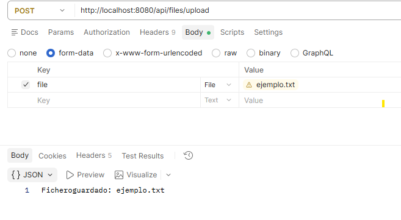
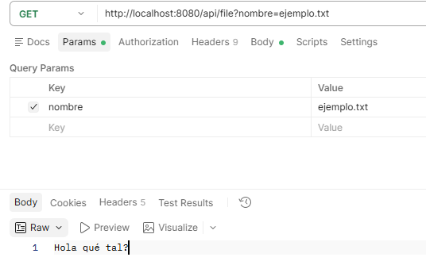
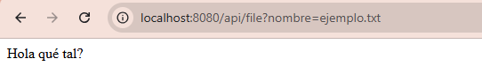
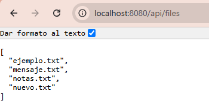

Subir un fichero existente¶
En el ejemplo anterior, el cliente enviaba un nombre y un texto para crear un fichero. Ahora podrá elegir un archivo que ya tenga en su ordenador y enviarlo completo.
¿Qué cambia respecto al apartado anterior?¶
| Crear un fichero a partir de texto | Subir un fichero existente | |
|---|---|---|
| Qué prepara el cliente | Un JSON con nombre y contenido |
Un archivo que ya está guardado en su ordenador |
| Qué envía | El nombre y el texto escritos en el JSON | Los bytes del archivo seleccionado |
| Qué hace el servidor | Escribe ese texto en un fichero | Guarda una copia del archivo recibido |
| Ejemplo | Enviar "contenido": "Hola" para crear mensaje.txt |
Seleccionar ejemplo.txt y enviar su contenido completo |
La novedad es transferir un archivo del ordenador del cliente al servidor. No tenemos que copiar su texto en un JSON. El archivo original permanece en el ordenador del cliente y la aplicación guarda una copia en la carpeta data del servidor.
Por ejemplo, en Postman pasaríamos de escribir el JSON en Body → raw → JSON a seleccionar un archivo en Body → form-data, en un campo de tipo File llamado file.
La subida también sirve para imágenes o PDF porque copia bytes. Para empezar probaremos con un archivo de texto, de modo que podamos comprobar su contenido con la operación de lectura que ya tenemos.
Continuamos en el mismo proyecto. Conserva el modelo, los métodos de escritura, lectura y listado. Añadiremos un método al servicio y otro al controlador.
1. El nuevo concepto: MultipartFile¶
En esta operación, el cliente envía el archivo utilizando el formato multipart/form-data: un formulario HTTP que puede incluir archivos. Spring representa el archivo recibido mediante MultipartFile.
originalFilenamepermite consultar el nombre original.isEmptyindica si no tiene contenido.inputStreampermite leer los bytes recibidos.
Recibir y guardar son dos pasos
El archivo llega en la petición. Para conservarlo, copiaremos su contenido a la carpeta data del servidor.
Ya conocemos @RequestParam por el nombre del fichero que queríamos leer. Ahora @RequestParam("file") obtendrá la parte del formulario llamada file y la entregará como un MultipartFile.
2. Añadir la subida al servicio¶
En service/FileService.kt, añade estos imports:
Añade el siguiente método dentro de la clase FileService, sin borrar sus otros métodos:
fun save(file: MultipartFile): String {
require(!file.isEmpty) { "El fichero está vacío" } // (1)!
val name = file.originalFilename ?: "" // (2)!
val destination = resolveName(name) // (3)!
file.inputStream.use { input -> // (4)!
Files.copy( // (5)!
input,
destination,
StandardCopyOption.REPLACE_EXISTING // (6)!
)
}
return "Fichero guardado: $name" // (7)!
}
- Comprueba que el archivo recibido tiene contenido. Si está vacío,
requirelanza una excepción y no se realiza la copia. - Obtiene el nombre enviado por el cliente. El operador
?:utiliza una cadena vacía si el nombre esnull; la comprobación siguiente rechazará ese nombre vacío. - Reutiliza
resolveName, creado en la página anterior, para comprobar el nombre y construir la ruta de destino dentro dedata. - Abre el flujo de bytes del archivo recibido.
uselo cierra automáticamente al terminar, también si se produce un error. - Copia los bytes de
inputal fichero indicado pordestination. No convierte el contenido a texto, por lo que también permite guardar archivos binarios. - Si ya existe un fichero con el mismo nombre en el destino, sustituye su contenido por el archivo recibido.
- Devuelve una confirmación al controlador, que la enviará al cliente como respuesta HTTP.
3. Añadir la operación al controlador¶
En controller/FileController.kt, añade este import:
Las anotaciones PostMapping y RequestParam ya están importadas. Añade este método dentro de FileController:
@PostMapping("/api/files/upload") // (1)!
fun upload(@RequestParam("file") file: MultipartFile): String { // (2)!
return fileService.save(file) // (3)!
}
- Asocia las peticiones
POST /api/files/uploadcon este método. El cliente debe enviar la petición para que se ejecute. - Recoge el archivo del campo de formulario llamado
filey lo representa como unMultipartFile. El nombre del campo en Postman o en la petición debe coincidir con"file". - Entrega el archivo al servicio para que lo guarde y devuelve su mensaje al cliente. El controlador no realiza la copia directamente.
No añadimos anotaciones nuevas: @PostMapping y @RequestParam ya aparecían en el ejemplo anterior. La novedad es el tipo MultipartFile, que representa el archivo recibido.
La aplicación dispone ahora de estas operaciones:
| Petición | Operación |
|---|---|
POST /api/file |
Crear o sustituir un texto enviando JSON |
GET /api/file?nombre=notas.txt |
Leer un fichero de texto |
GET /api/files |
Listar los nombres de los ficheros |
POST /api/files/upload |
Subir un archivo existente |
4. Probar la subida y comprobar las operaciones anteriores¶
Arranca la aplicación. Abre PowerShell en una carpeta que contenga un archivo de texto UTF-8 llamado ejemplo.txt, con contenido, y ejecuta:
-Fcrea una petición de formulario.filecoincide con el nombre de@RequestParam("file").@ejemplo.txtindica que se envía el contenido del archivo.
La respuesta será:
Comprueba que el fichero aparece en data. Después utiliza las operaciones que ya teníamos:
Invoke-RestMethod http://localhost:8080/api/files
Invoke-RestMethod "http://localhost:8080/api/file?nombre=ejemplo.txt"
El listado incluirá ejemplo.txt y la segunda petición devolverá su texto. También puedes volver a crear notas.txt con el JSON de la página anterior: ambas formas de guardar ficheros siguen disponibles.
Probar con Postman¶
Las instrucciones básicas de uso de Postman se explican en Primera aplicación con ficheros. Aquí las aplicaremos a la subida mediante multipart/form-data. Mantén la aplicación ejecutándose en IntelliJ y utiliza http://localhost:8080 como dirección del servidor.
Subir ejemplo.txt¶
- Crea una petición POST a
http://localhost:8080/api/files/upload. - Abre Body y selecciona form-data.
- Añade una fila con la clave
file. - Cambia el tipo de esa fila de Text a File y pulsa Select Files.
- Selecciona el archivo
ejemplo.txty pulsa Send.
La respuesta debe ser:

No añadas manualmente Content-Type: application/json: en una petición multipart/form-data, Postman genera la cabecera y el separador necesarios.
Leer el archivo subido¶
- Crea una petición GET a
http://localhost:8080/api/file. - En Params, añade
nombrecomo clave yejemplo.txtcomo valor. - Deja el cuerpo en none y pulsa Send.

Postman debe mostrar el texto guardado en ejemplo.txt. También puedes abrir la URL completa en el navegador, porque esta operación utiliza GET.

Listar los archivos¶
Crea una petición GET a http://localhost:8080/api/files, sin cuerpo, y pulsa Send. La respuesta JSON debe incluir ejemplo.txt junto con los demás ficheros de la carpeta data.

Comprueba que lo entiendes
¿Qué diferencia hay entre enviar un JSON con nombre y contenido para crear texto y subir un archivo ejemplo.txt que ya existe en el ordenador del cliente?
Respuesta
El JSON contiene el nombre y el texto que el servicio escribirá. En la subida enviamos los bytes de un archivo que ya existe y el servicio los copia al destino.
En la siguiente página reutilizaremos MultipartFile para recibir un CSV y convertir sus datos a una respuesta JSON.